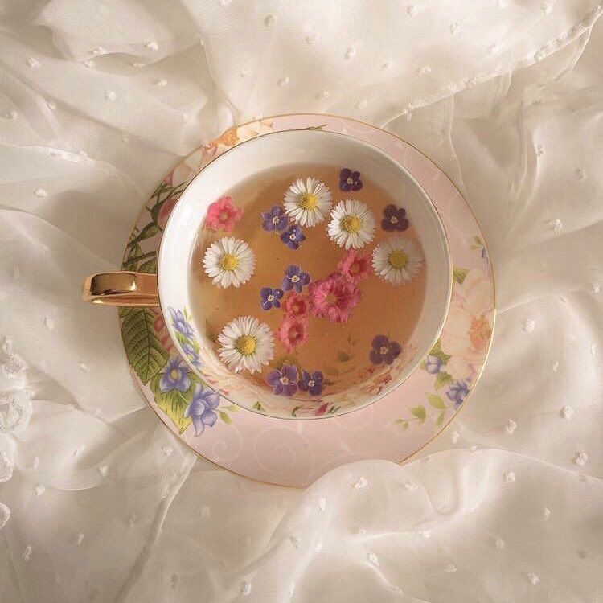
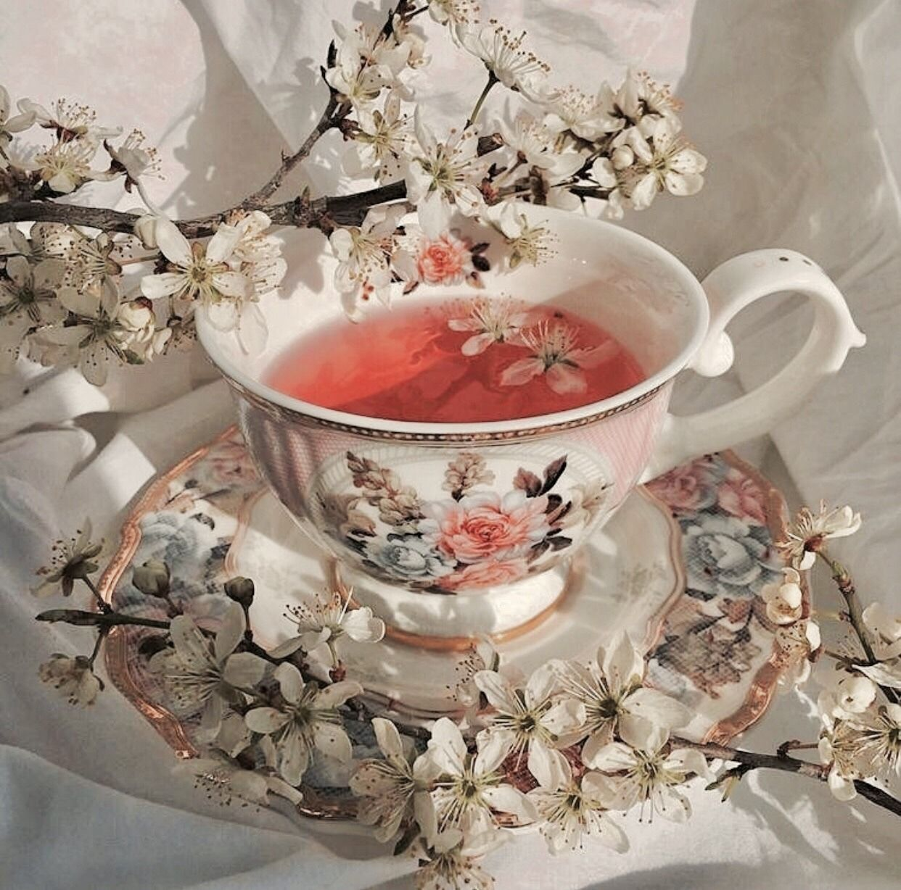
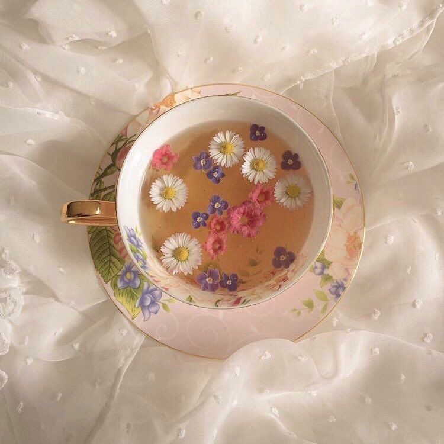
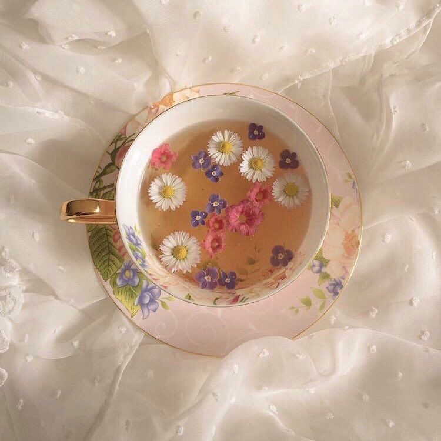
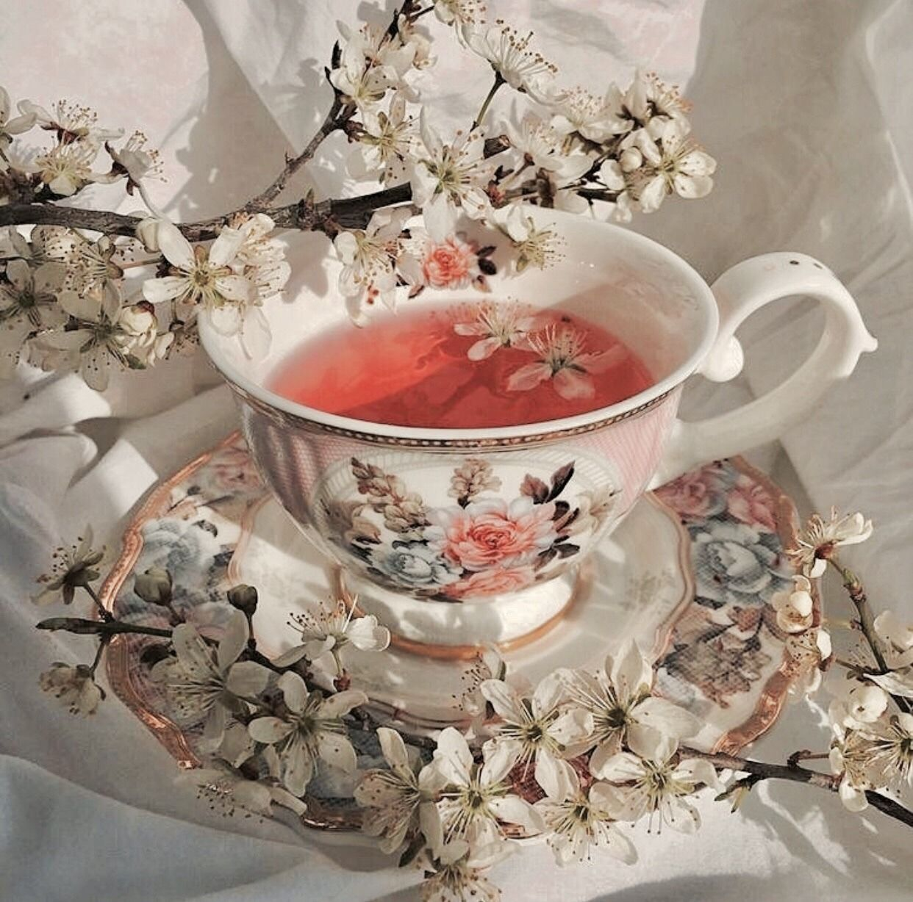
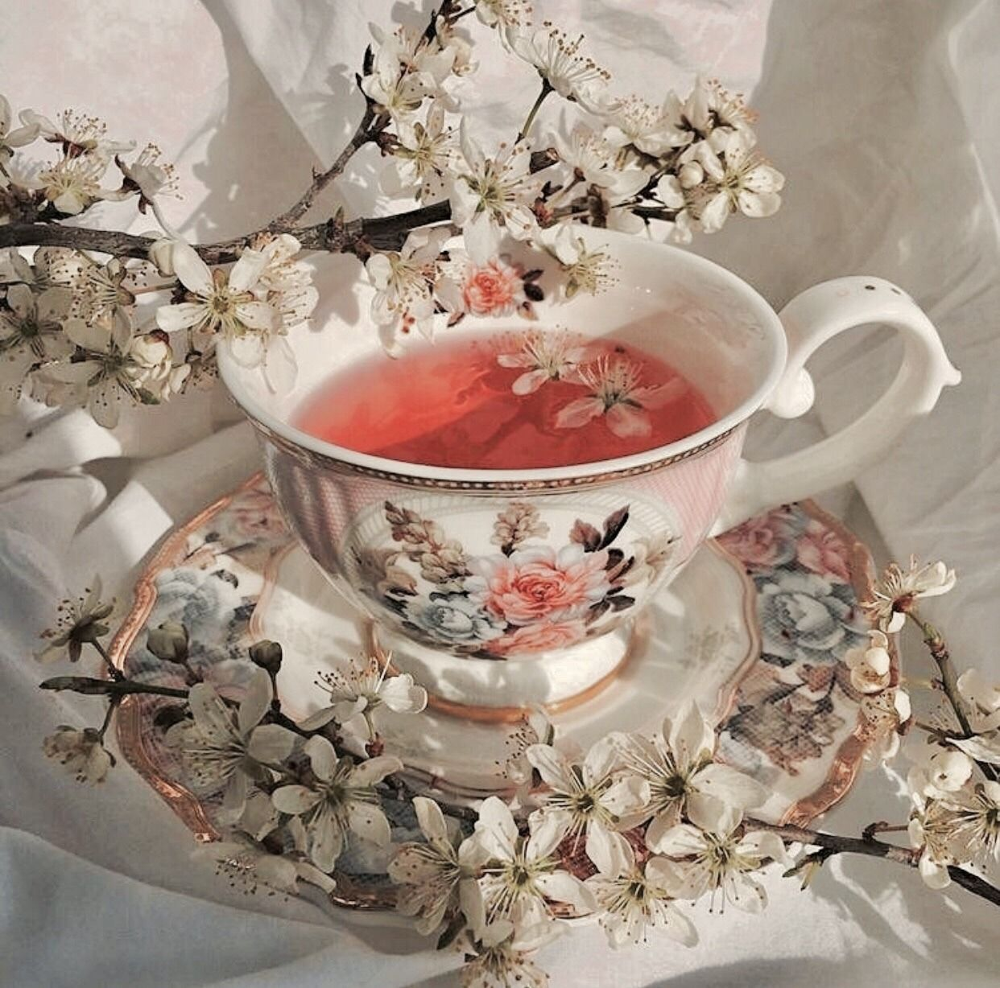

Our website was created with the goal of educating and informing people about the wide variety of teas available around the world. We believe that tea is more than just a beverage - it's a lifestyle! Our mission is to share the many benefits, flavors, and fun facts of tea with our readers, as well as provide valuable information on its history and cultural significance. Whether you're a tea connoisseur or a newcomer to the world of tea, we're confident that you'll find our website to be a valuable resource. Our target market includes tea lovers of all ages and backgrounds, as well as those who are curious about the many different types of tea available. We invite you to explore our website and join us on this journey of discovery!
Moreover, the most compelling reason to explore the world of tea is its many health benefits. Tea contains antioxidants, which can help to prevent cell damage and reduce the risk of chronic diseases such as heart disease and cancer. It can also help to boost the immune system, improve brain function, and promote relaxation and stress relief.
At T3, we believe that everyone can benefit from learning more about tea and its many benefits. Our website is designed to be a comprehensive resource for people of all ages and backgrounds, from tea lovers to those who are just starting to explore the world of tea. So whether you're looking for information on the history of tea, fun facts, or different types of tea, we're here to help you on your journey of discovery!


Hello there! My name is Arundati Nayyar, and I'm a senior at Babson College, where I'm pursuing a degree in entrepreneurship. I have a passion for tea and innovation, which led me to start my own tea company called T3. Our mission at T3 is to provide our customers with high-quality tea blends and a unique tea experience.
As a tea lover myself, I believe that tea is more than just a beverage - it's a way of life. Through T3, I aim to share my love of tea with others and help them discover the many benefits and flavors that tea has to offer.
I was born and raised in India, where tea is a huge part of the culture. When I moved to San Diego as a teenager, I was surprised to find that many people knew very little about tea and its many varieties. This experience inspired me to start T3 and create a website where people can learn about tea, its history, and cultural significance. I also learnt how to make Chai from my grandparents which holds a special place in my heart and I will be sharing some cool recipes as well!
I'm excited to share my passion for tea with you and invite you to join me on this journey of discovery. Thank you for visiting my website, and I look forward to connecting with you soon!


 

 
